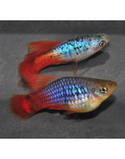

Xiphophorus maculatus, le Platy est une espèce de poissons d'eau douce tropicale d'Amérique du Sud et Centrale de la famille des Poeciliidae. C'est un poisson d'aquarium très populaire en raison de ses couleurs variées et de sa robustesse.
